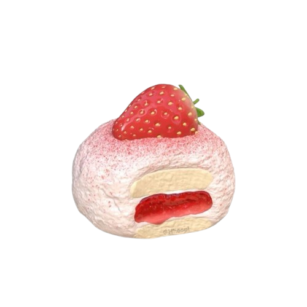

Mochi
Bahan:
- 2 piring nasi putih
- 2 siung bawang putih, cincang
- 1 butir telur
- 2 sdm kecap manis
- 1 sdm saus sambal
- Garam dan merica secukupnya
Langkah:
- Panaskan minyak, tumis bawang putih hingga harum.
- Masukkan telur, orak-arik hingga matang.
- Tambahkan nasi putih, aduk hingga merata.
- Masukkan kecap manis, saus sambal, garam, dan merica.
- Masak hingga bumbu meresap, angkat dan sajikan.